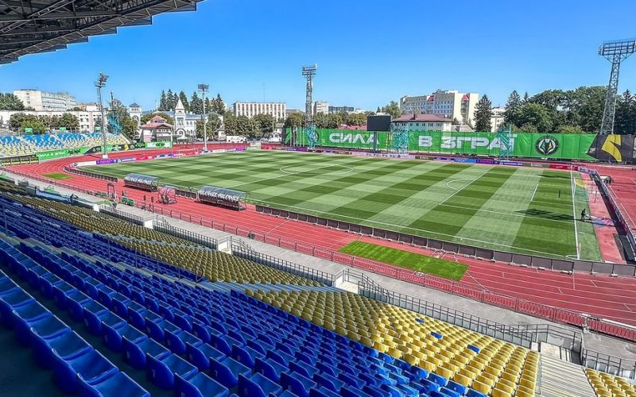
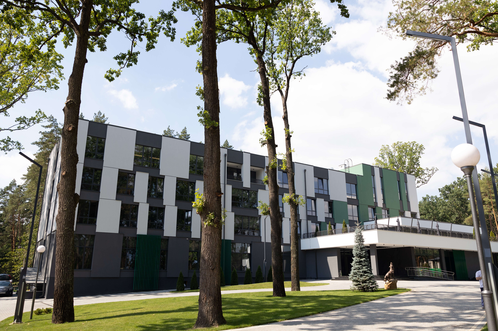
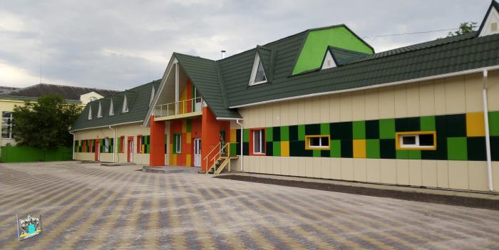

ДОМАШНЯ АРЕНА
ЦЕНТРАЛЬНИЙ СТАДІОН М. ЖИТОМИР
Сучасний зелений газон, підігрів, якісне освітлення.
- Місткість
- ~5 928 глядачів
- Статус
- Діючий
Історія та традиції
Офіційне заснування клубу під назвою «Авангард». Згодом команда носила назви «Полісся», «Автомобіліст», «спб» та «МСК Житомир».
«Полісся» стає бронзовим призером Чемпіонату УРСР серед команд Класу «Б».
Команда бере участь у першому в історії незалежної України Чемпіонаті серед команд Першої ліги.
Клуб втрачає професійний статус і бере тривалу паузу у виступах на всеукраїнській арені.
Офіційне відродження та перезапуск клубу за підтримки міської влади та спонсорів.
Повернення до Другої ліги ПФЛ і стабільний розвиток інфраструктури.
Зміна брендингу та поява нового логотипа з образом вовка — символу незламності та командної зграї.
Тріумфальний вихід до Української Прем'єр-ліги в статусі переможця Першої ліги.
Історичний дебют в УПЛ та боротьба за єврокубкові місця у першому ж сезоні на найвищому рівні.
Дім команди

ДОМАШНЯ АРЕНА
Сучасний зелений газон, підігрів, якісне освітлення.

ІНФРАСТРУКТУРА КЛУБУ
Тренувальні поля та відновлювальний комплекс для першої команди.

АКАДЕМІЯ
Тренувальні поля для молодіжних команд клубу.
Розвиток клубу
Регіон
Мета
Зв’язок із клубом
Для звернень, партнерських пропозицій та запитів медіа.